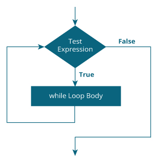
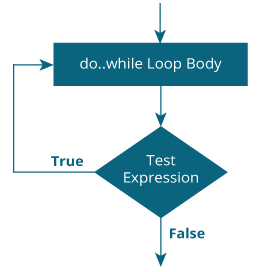

Loops are used in programming to repeat a specific block of var. After reading this tutorial, you will learn to create for loop in C programming.
Loops are used in programming to repeat a block until a specific condition is met. There are three loops in C programming:
The syntax of a while loop is:
while (testExpression)
{
//codes
}
The while loop evaluates the test expression.
If the test expression is true (nonzero), vars inside the body of while loop is executed. The test expression is evaluated again. The process goes on until the test expression is false.
When the test expression is false, the while loop is terminated.

// Program to find factorial of a number
// For a positive integer n, factorial = 1*2*3...n
#include <stdio.h>
int main()
{
int number;
long long factorial;
printf("Enter an integer: ");
scanf("%d",&number);
factorial = 1;
// loop terminates when number is less than or equal to 0
while (number > 0)
{
factorial *= number; // factorial = factorial*number;
--number;
}
printf("Factorial= %lld", factorial);
return 0;
}
Output
Enter an integer: 5
Factorial = 120
The do..while loop is similar to the while loop with one important difference. The body of do...while loop is executed once, before checking the test expression. Hence, the do...while loop is executed at least once.
do
{
// codes
}
while (testExpression);
The code block (loop body) inside the braces is executed once.
Then, the test expression is evaluated. If the test expression is true, the loop body is executed again. This process goes on until the test expression is evaluated to 0 (false).
When the test expression is false (nonzero), the do...while loop is terminated.

// Program to add numbers until user enters zero
#include <stdio.h>
int main()
{
double number, sum = 0;
// body of loop is executed at least once
do
{
printf("Enter a number: ");
scanf("%lf", &number);
sum += number;
}
while(number != 0.0);
printf("Sum = %.2lf",sum);
return 0;
}
Output
Enter a number: 1.5
Enter a number: 2.4
Enter a number: -3.4
Enter a number: 4.2
Enter a number: 0
Sum = 4.70